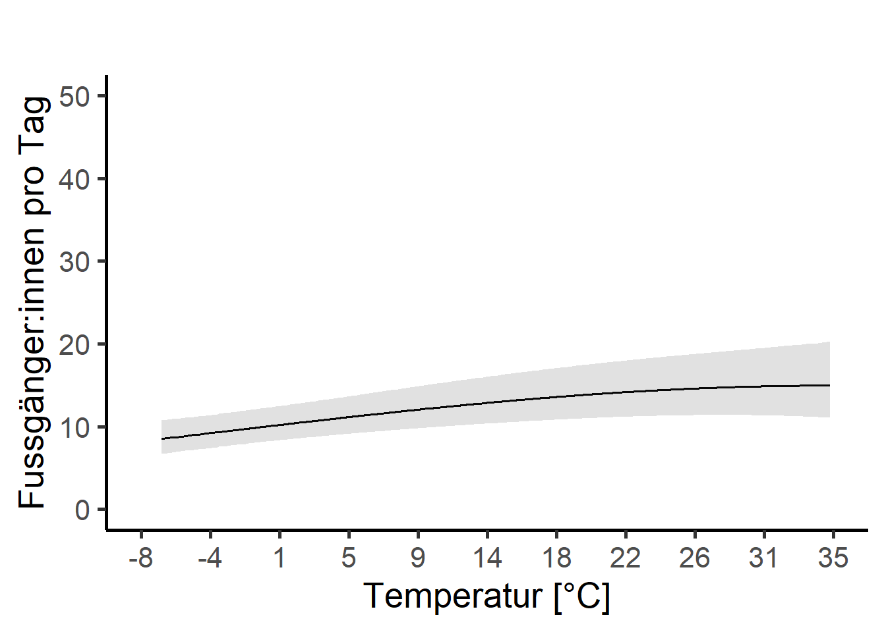

Nachdem die deskriptiven Resultate vorliegen, kann jetzt die Berechnung eines multivariaten Modells angegangen werden. Das Ziel ist es, den Zusammenhang zwischen der gesamten Anzahl Besucher:innen (Total) und verschiedenen erklärenden Variablen (Tageszeit, Wetter, Ferien, Phase Covid, Wochentag, KW, Jahr) aufzuzeigen.
Aufgabe 1: Verbinden von Daten
Aktuell haben wir noch zwei einzelne Datensätze von Interesse:
einen mit den täglichen Besuchszahlen von Besucher:innen mit den dazugehörigen Datumsinformationen (Datensatz “depo_d” - zu Tagen aggregierte Stunden)
und einen mit den Wetterparametern (“meteo”).
Diese beiden Datensätze müssen miteinander verbunden werden. Ziel: Ein Datensatz mit den täglichen Zähldaten (sowie Conviniencevariablen wie Wetter, Phase Covid, Tageszeit usw.) angereichert mit Wetterdaten. Der neue Datensatz soll ” umwelt ” heissen.
Sind durch das Zusammenführen NA’s entstanden? Falls ja, müssen alle für die weiteren Auswertungen ausgeschlossen werden.
Jetzt schreiben wir die Funktion, mit welcher wir die Ferienzeiträume zuweisen können. Einfach gesagt: WENN grösser gleich Starzeitraum UND kleiner gleich Endzeitraum, DANN schreibe eine 1. Wo es keine 1 hat, wird ein NA generiert. Ersetze das dann mit 0.
for (i in1:nrow(ferien)){ umwelt$Ferien[umwelt$Datum >= ferien[i,"Start"] & umwelt$Datum <= ferien[i,"End"]] <-1}umwelt$Ferien[is.na(umwelt$Ferien)] <-0
Zum einfachen prüfen, ob das funktioniert hat, kann man die Anzahl Ferientage zählen. Diese sollte nicht gleich 0 sein.
2b)
Macht aus den Ferien einen Faktor.
Auch das Jahr, der Monat und die KW müssen als Faktor vorliegen.
Hinweis: Im Modell werden die Levels der Variablen (z.B. bei der Phase Covid: Pre, Normal, Lockdown 1 und 2, Covid) per “default” alphabetisch geordnet und die Effektstärken der einzelnen Levels gegenüber dem ersten Level gerechnet. Das macht wenig Sinn, den ohne eigene Ordnung zeigt es uns die Effekte von Lockdown 1, Lockdown 2 und Normal gegenüber Covid an. Besser ist aber Lockdown 1, Lockdown 2 und Covid gegenüber Pre.
Das solltet ihr bereits unter [KW 42+43: Übung Datenvorverarbeitung], Aufgabe 3: Datenvorverarbeitung gemacht haben.
Vergewissert euch, dass die numerischen Messwerte zu Wetter auch in numerischer Form vorliegen. (is.numeric())
Nachfolgende Schritte funktionieren nur, wenn umwelt als data.frame vorliegt! Prüft das und ändert das, falls noch kein data.frame (Hinweis: auch ein “tibble” funktioniert nicht, obwohl bei der Abfrage is.data.frame() TRUE angegeben wird. Damit ihr beim scalen keine NaN Werte erhaltet, wendet ihr darum am besten in allen Fällen zuerst den Befehl as.data.frame() an).
Unser Modell kann in der abhängigen Variabel nur mit Ganzzahlen (Integer) umgehen. Daher müssen Kommazahlen in Integer umgewandelt werden. Zum Glück haben wir das schon gemacht und uns bleibt nichts weiter zu tun. =)
2c)
Problem: verschiedene Skalen der Variablen (z.B. Temperatur in Grad Celsius, Niederschlag in Millimeter und Sonnenscheindauer in %)
Lösung: Skalieren aller Variablen mit Masseinheiten gemäss unterstehendem Code:
Korrelierende Variablen können das Modellergebnis verfälschen. Daher muss vor der Modelldefinition auf Korrelation zwischen den Messwerten getestet werden. Welches sind die erklärenden Variablen, welches ist die Abhängige? (Ihr müsst nicht prüfen, ob die Voraussetzungen zur Berechnung von Korrelationen erfüllt sind)
Teste mittels folgendem Code auf eine Korrelation zwischen den Messwerten.
cor <-cor(umwelt[,ERSTE SPALTE MIT ERKLAERENDEN MESSWERTEN : LETZTE SPALTE MIT ERKLAERENDEN MESSWERTEN)])
3b)
Korrelationsmatrix erstellen
Mit dem folgenden Code kann eine Korrelationsmatrix (mit den Messwerten) aufgebaut werden. Hier kann auch die Schwelle für die Korrelation gesetzt werden (0.7 ist liberal / 0.5 konservativ).
cor[abs(cor) <0.7] <-0#Setzt alle Werte kleiner 0.7 auf 0
Zur Visualisierung kann ein einfacher Plot erstellt werden.
chart.Correlation(umwelt[,ERSTE SPALTE MIT ERKLAERENDEN MESSWERTEN : LETZTE SPALTE MIT ERKLAERENDEN MESSWERTEN)], histogram=TRUE, pch=19)
Wo kann eine kritische Korrelation beobachtet werden? Kann man es verantworten, trotzdem alle (Wetter)parameter in das Modell zu geben?
Falls ja: warum? Falls nein: schliesst den betreffenden Parameter aus. Wenn ihr Parameter ausschliesst: welchen der beiden korrelierenden Parameter behaltet ihr im Modell?
Führe die dredge-Funktion und ein Modelaveraging durch. Der Code dazu ist unten. Was passiert in der Funktion? Macht es Sinn, die Funktion auszuführen?
Hinweis: untenstehender Code ist sehr rechenentensiv.
# Hier wird die Formel für die dredge-Funktion vorbereitetf <- Total ~ Wochentag + Ferien + Phase + Monat + tre200jx_scaled + rre150j0_scaled + rre150n0_scaled + sremaxdv_scaled# Jetzt kommt der Random-Factor hinzu und es wird eine Formel daraus gemachtf_dredge <-paste(c(f, "+ (1|Jahr)"), collapse =" ") |>as.formula()# Das Modell mit dieser Formel ausführenm <-glmer.nb(f_dredge, data = umwelt, na.action ="na.fail")# Das Modell in die dredge-Funktion einfügen (siehe auch ?dredge)all_m <-dredge(m)# suche das beste Modellprint(all_m)# Importance values der Variablen# hier wird die wichtigkeit der Variablen in den verschiedenen Modellen abgelesenMuMIn::sw(all_m)# Schliesslich wird ein Modelaverage durchgeführt# Schwellenwert für das delta-AIC = 2avgmodel <-model.avg(all_m, rank ="AICc", subset = delta <2)summary(avgmodel)
Aufgabe 5: Verteilung der abhängigen Variabel pruefen
Die Verteilung der abhängigen Variabel bestimmt, was für ein Modell geschrieben werden kann. Die Modelle gehen von einer gegebenen Verteilung aus. Wenn diese Annahme verletzt wird, kann es sein, dass das Modellergebnis nicht valide ist.
Folgender Codeblock zeigt, wie die Daten auf verschiedene Verteilungen passen.
Hinweis: es kann sein, dass nicht jede Verteilung geplottet werden kann, es erscheint eine Fehlermeldung. Das ist nicht weiter schlimm, die betreffende Verteilung kann gelöscht werden. Analog muss das auch im Befehl gofstat() passieren.
Die besten drei Verteilungen (gemäss AIC) sollen zur Visualisierung geplottet werden. Dabei gilt, je besser die schwarze Punktlinie (eure Daten) auf die farbigen Linien (theoretische Verteilungen) passen, desto besser ist diese Verteilung geeignet.
Hinweis: CDF = Cumulative distribution function; Wikipedia = “Anschaulich entspricht dabei der Wert der Verteilungsfunktion an der Stelle x der Wahrscheinlichkeit, dass die zugehörige Zufallsvariable X einen Wert kleiner oder gleich x annimmt.” Ihr müsst aber nicht weiter verstehen, wie das berechnet wird, wichtig für euch ist, dass ihr den Plot interpretieren könnt.
f1<-fitdist(umwelt$Anzahl_Total,"norm") # Normalverteilungf1_1<-fitdist(umwelt$Anzahl_Total,"lnorm") # log-Normalvert. f2<-fitdist(umwelt$Anzahl_Total,"pois") # Poissonf3<-fitdist(umwelt$Anzahl_Total,"nbinom") # negativ binomialf4<-fitdist(umwelt$Anzahl_Total,"exp") # exponentiellf5<-fitdist(umwelt$Anzahl_Total,"gamma") # gammaf6<-fitdist(umwelt$Anzahl_Total,"logis") # logistischf7<-fitdist(umwelt$Anzahl_Total,"geom") # geometrischf8<-fitdist(umwelt$Anzahl_Total,"weibull") # Weibullgofstat(list(f1,f1_1,f2,f3,f4,f5,f6,f7,f8), fitnames =c("Normalverteilung", "log-Normalverteilung", "Poisson","negativ binomial","exponentiell","gamma", "logistisch","geometrisch","weibull"))# die 2 besten (gemaess Akaike's Information Criterion) als Plot + normalverteilt, plot.legend <-c("Normalverteilung", "exponentiell", "negativ binomial")# vergleicht mehrere theoretische Verteilungen mit den empirischen Datencdfcomp(list(f1, f4, f3), legendtext = plot.legend)
Wie sind unsere Daten verteilt? Welche Modelle können wir anwenden?
Wählt die besten zwei Verteilungen aus und berechnet damit nachfolgend Modelle.
Aufgabe 6: Multivariates Modell berechnen
Ich verwende die Funktion glmer() aus der Bibliothek lme4 (diese Bibliothek wird auch in vielen wissenschaftlichen Papern im Feld Biologie / Wildtiermamagement zitiert).
Hinweise zu GLMM: https://bbolker.github.io/mixedmodels-misc/glmmFAQ.html
6a)
Hinweis: Auch wenn wir gerade herausgefunden haben, dass die Verteilung negativ binominal (in meinem Fall) ist, berechne ich für den Vergleich zuerst ein “einfaches Modell” der Familie poisson. Alternative Modelle rechnen wir in 6c.
Die Totale Besucheranzahl soll durch die Wetterparameter, den Wochentag, die Ferien sowie die Covid-Phasen und die Tageszeit erklärt werden (Datensatz “umwelt”). Die einzelnen Jahre sollen hierbei nicht beachtet werden, sie werden als “random factor” bestimmt.
Frage: Warum bestimmen wir das Jahr als random factor?
Falls ihr der Meinung seid, Jahr ist kein “guter” random factor, dann nehmt es nicht an random factor ins Modell sondern als erklärende Variable. Begründet das unbedingt in eurer Methodik.
Löst zuerst Aufgabe 6b bevor ihr alternative Modelle rechnet; das kommt in Aufgabe 6c!
6b) Modelldiagnostik
Prüft optisch ob euer Modell valide ist.
Hinweis: glmer bringt einige eigene Funktionen mit, mit denen sich testen lässt, ob das Modell valide ist. Unten sind sie aufgeführt (–> analog zu den Funktionen aus der Vorlesung, aber halt für glmer).
# Inspektionsplotsplot(Tages_Model, type =c("p", "smooth"))qqmath(Tages_Model)# pruefe auf Overdispersiondispersion_glmer(Tages_Model) #it shouldn't be over 1.4# wir gut erklaert das Modell?r.squaredGLMM(Tages_Model) # check for multicollinearity# https://rforpoliticalscience.com/2020/08/03/check-for-multicollinearity-with-the-car-package-in-r/car::vif(Tages_Model) # VIF für beide predictors = 1, d.h. voneinander unabhängig (kritisch wird es ab einem Wert von >4-5)
Sind die Voraussetzungen des Modells erfüllt?
6c) Alternative Modelle
Wir sind auf der Suche nach dem minimalen adäquaten Modell. Das ist ein iterativer Prozess. Wir schreiben ein Modell, prüfen ob die Voraussetzungen erfüllt sind und ob die abhängige Variable besser erklärt wird als im vorhergehenden. Und machen das nochmals und nochmals…
Über family = kann in der Funktion _glmer()__ einiges (aber leider nicht alles so einfach [z.B. negativ binominale Modelle]) angepasst werden: https://stat.ethz.ch/R-manual/R-devel/library/stats/html/family.html
Auch über link = kann man anpassen: https://stat.ethz.ch/R-manual/R-devel/library/stats/html/make.link.html
Unsere (meine) Daten sind negativ binominal verteilt. Daher sollte wir unbedingt ein solches Modell programmieren. –> Funktion glmer.nb()
Falls die Daten exponentiell Verteilt sind, hier der Link zu einem Blogeintrag dazu: https://stats.stackexchange.com/questions/240455/fitting-exponential-regression-model-by-mle
Hypothese: “Es gehen weniger Leute in den Wald, wenn es zu heiss ist” –> auf quadratischen Term Temperatur testen (Codeblock unten).
...tre200jx_scaled +I(tre200jx_scaled^2) + ...
Könnte es zwischen einzelnen Variablen zu Interaktionen kommen, die plausible sind? (z. B.: Im Winter hat Niederschlag einen negativeren Effekt als im Sommer, wenn es heiss ist) –> Falls ja: testen!
Hinweis: Interaktionen berechnen ist sehr rechenintensiv. Auch die Interpretation der Resultate wird nicht unbedingt einfacher. Wenn ihr auf Interaktionen testet, dann geht “langsam” vor, probiert nicht zu viel auf einmal.
Wenn ihr verschiedene Modelle gerechnet habt, können diese über den AICc verglichen werden. Folgender Code kann dazu genutzt werden:
Hinweis: Nur Modelle mit demselben Datensatz können miteinander verglichen werden. D.h., dass die Modelle mit den originalen Daten nicht mit logarithmiertem oder exponierten Daten verglichen werden können.
## Vergleich der Modellguete mittels AICccand.models<-list()cand.models[[1]] <- Tages_Modelcand.models[[2]] <- Tages_Model_nbcand.models[[3]] <- Tages_Model_nb_quadModnames<-c("Tages_Model","Tages_Model_nb", "Tages_Model_nb_quad")aictab(cand.set=cand.models,modnames=Modnames)##K = Anzahl geschaetzter Parameter (2 Funktionsparameter und die Varianz)##Delta_AICc <2 = Statistisch gleichwertig##AICcWt = Akaike weight in %
6d) (OPTIONAL) Transformationen
Bei meinen Daten waren die Modellvoraussetzungen überall mehr oder weniger verletzt. Das ist ein Problem, allerdings auch nicht ein so grosses (man sollte es aber trotzdem ernst nehmen). Mehr dazu unter:
Schielzeth et al. Robustness of linear mixed‐effects models to violations of distributional assumptions https://besjournals.onlinelibrary.wiley.com/doi/10.1111/2041-210X.13434 Lo and Andrews, To transform or not to transform: using generalized linear mixed models to analyse reaction time data https://www.frontiersin.org/articles/10.3389/fpsyg.2015.01171/full
Falls die Voraussetzungen stark verletzt werden, wäre eine Transformation angezeigt.
Wenn ihr das machen wollt, berechnet zuerst den skewness coefficient
library(moments)skewness(umwelt$Anzahl_Total)## A positive value means the distribution is positively skewed (rechtsschief).## The most frequent values are low; tail is toward the high values (on the right-hand side)
Welche Transformation kann angewandt werden?
Was spricht gegen eine Transformation (auch im Hinblick zur Visualisierung und Interpretation)? Was spricht dafür?
6c) Exportiere die Modellresultate (des besten Modells)
Modellresultate können mit summary() angezeigt werden. Ich verwende aber lieber die Funktion tab_model()! Die Resultate werden gerundet und praktisch im separaten Fenster angezeigt. Von dort kann man sie via copy + paste ins (z.B.) Word bringen.
tab_model(MODELLNAME, transform =NULL, show.se =TRUE)## The marginal R squared values are those associated with your fixed effects, ## the conditional ones are those of your fixed effects plus the random effects. ## Usually we will be interested in the marginal effects.
Aufgabe 7: Modellvisualisierung
Visualisiert die (signifikanten) Ergebnisse eures Modells.
Das Resultat soll sich für kontinuierliche Variablen an untenstehendem Plot orientieren:

Für diskrete Variablen haltet ihr euch bitte an diesen Plot:
Sabrina Harsch hat im HS21 eine sehr nützliche Funktion dafür geschriben:
Passt die Funktion so an, dass damit nicht nur die kontinuierlichen Variablen sondern auch die diskreten Variablen geplottet werden können (das ist schon fortgeschritten; Falls ihr nicht weiterkommt, kommt auf mich zu).
Hinweis: damit unsere Plots verglichen werden können, sollen sie alle dieselbe Skalierung (limits) auf der y-Achse haben. Das wird erreicht, indem man bei jedem Plot die limits in scale_y_continuous() gleichsetzt.
Hinweis: Es könnten auch interaction-plots erstellt werden: https://cran.r-project.org/web/packages/sjPlot/vignettes/plot_interactions.html
Abschluss
Nun habt ihr verschiedenste Ergebnisse vorliegen. In einem wissenschaftlichen Bericht sollen aber niemals alle Ergebnisse abgebildet werden. Eine Faustregel besagt, dass nur signifikante Ergebnisse visualisiert werden. Entscheidet euch daher, was ihr in eurem Bericht abbilden wollt und was lediglich besprochen werden soll.
Quellcode
# KW 44: Übung Multivariat```{r include=FALSE}# Datenherkunft ##### Saemtliche verwendeten Zaehdaten sind Eigentum des Wildnispark Zuerich und duerfen nur im Rahmen # des Moduls verwendet werden. Sie sind vertraulich zu behandeln.# Die Meteodaten sind Eigentum von MeteoSchweiz.# Verwendete Meteodaten# Lufttemperatur 2 m UEber Boden; Tagmaximum (6 UTC blis 18 UTC), tre200jx [°C ]# Niederschlag; Halbtagessumme 6 UTC - 18 UTC, rre150j0 [mm]# Ordnerstruktur ##### Im Ordner in dem das R-Projekt abgelegt ist muessen folgende Unterordner bestehen:# - data (Rohdaten hier ablegen)# - results# - scripts# Benoetigte Bibliotheken ####library(tidyverse) # Data wrangling und pipinglibrary(lubridate) # Arbeiten mit Datumsformatenlibrary(suncalc) # berechne Tageszeiten abhaengig vom Sonnenstandlibrary(ggpubr) # to arrange multiple plots in one graphlibrary(PerformanceAnalytics) # Plotte Korrelationsmatrixlibrary(MuMIn) # Multi-Model Inferencelibrary(AICcmodavg)# Modellaverageinglibrary(fitdistrplus)# Prueft die Verteilung in Datenlibrary(lme4) # Multivariate Modellelibrary(blmeco) # Bayesian data analysis using linear modelslibrary(sjPlot) # Plotten von Modellergebnissen (tab_model)library(lattice) # einfaches plotten von Zusammenhängen zwischen Variablen# definiere ein farbset zur wiedervewendungmycolors <-c("orangered","gold", "mediumvioletred", "darkblue")# Start und Ende ##### Untersuchungszeitraum, ich waehle hier das Jahr 2019 bis und mit Sommer 2021depo_start <-as.Date("2017-01-01")depo_end <-as.Date("2022-7-31")# Start und Ende Lockdown# definieren, wichtig fuer die spaeteren Auswertungenlock_1_start_2020 <-as.Date("2020-03-16")lock_1_end_2020 <-as.Date("2020-05-11")lock_2_start_2021 <-as.Date("2020-12-22")lock_2_end_2021 <-as.Date("2021-03-01")# Ebenfalls muessen die erste und letzte Kalenderwoche der Untersuchungsfrist definiert werden# Diese werden bei Wochenweisen Analysen ebenfalls ausgeklammert da sie i.d.R. unvollstaendig sindKW_start <-isoweek(depo_start)KW_end <-isoweek(depo_end)# Erster und letzter Tag der Ferien# je nach Untersuchungsdauer muessen hier weitere oder andere Ferienzeiten ergaenzt werden# (https://www.schulferien.org/schweiz/ferien/2020/)Winterferien_2016_start <-as.Date("2017-01-01") Winterferien_2016_ende <-as.Date("2017-01-08")Fruehlingsferien_2017_start <-as.Date("2017-04-15") Fruehlingsferien_2017_ende <-as.Date("2017-04-30") Sommerferien_2017_start <-as.Date("2017-07-15") Sommerferien_2017_ende <-as.Date("2017-08-20") Herbstferien_2017_start <-as.Date("2017-10-07") Herbstferien_2017_ende <-as.Date("2017-10-22") Winterferien_2017_start <-as.Date("2017-12-23") Winterferien_2017_ende <-as.Date("2018-01-07") Fruehlingsferien_2018_start <-as.Date("2018-04-21") Fruehlingsferien_2018_ende <-as.Date("2018-05-06") Sommerferien_2018_start <-as.Date("2018-07-14") Sommerferien_2018_ende <-as.Date("2018-08-19") Herbstferien_2018_start <-as.Date("2018-10-06") Herbstferien_2018_ende <-as.Date("2018-10-21") Winterferien_2018_start <-as.Date("2018-12-22") Winterferien_2018_ende <-as.Date("2019-01-06") Fruehlingsferien_2019_start <-as.Date("2019-04-20") Fruehlingsferien_2019_ende <-as.Date("2019-05-05") Sommerferien_2019_start <-as.Date("2019-07-13") Sommerferien_2019_ende <-as.Date("2019-08-18") Herbstferien_2019_start <-as.Date("2019-10-05") Herbstferien_2019_ende <-as.Date("2019-10-20") Winterferien_2019_start <-as.Date("2019-12-21") Winterferien_2019_ende <-as.Date("2020-01-05")Fruehlingsferien_2020_start <-as.Date("2020-04-11")Fruehlingsferien_2020_ende <-as.Date("2020-04-26")Sommerferien_2020_start <-as.Date("2020-07-11")Sommerferien_2020_ende <-as.Date("2020-08-16")Herbstferien_2020_start <-as.Date("2020-10-03")Herbstferien_2020_ende <-as.Date("2020-10-18")Winterferien_2020_start <-as.Date("2020-12-19")Winterferien_2020_ende <-as.Date("2021-01-03")Fruehlingsferien_2021_start <-as.Date("2021-04-24")Fruehlingsferien_2021_ende <-as.Date("2021-05-09")Sommerferien_2021_start <-as.Date("2021-07-17")Sommerferien_2021_ende <-as.Date("2021-08-22")Herbstferien_2021_start <-as.Date("2021-10-09")Herbstferien_2021_ende <-as.Date("2021-10-24")Winterferien_2021_start <-as.Date("2021-12-18")Winterferien_2021_ende <-as.Date("2022-01-02")Fruehlingsferien_2022_start <-as.Date("2022-04-16")Fruehlingsferien_2022_ende <-as.Date("2022-05-01")Sommerferien_2022_start <-as.Date("2022-07-16")Sommerferien_2022_ende <-as.Date("2022-08-21")Herbstferien_2022_start <-as.Date("2022-10-08")Herbstferien_2022_ende <-as.Date("2022-10-23")Winterferien_2022_start <-as.Date("2022-12-24")Winterferien_2022_ende <-as.Date("2023-01-08")#.################################################################################################# 1. DATENIMPORT ######.################################################################################################# Beim Daten einlesen koennen sogleich die Datentypen und erste Bereinigungen vorgenommen werden# 1.1 Zaehldaten ##### Die Zaehldaten des Wildnispark wurden vorgaengig bereinigt. z.B. wurden Stundenwerte # entfernt, an denen am Zaehler Wartungsarbeiten stattgefunden haben.# lese die Daten ein # Je nach Bedarf muss der Speicherort sowie der Dateiname angepasst werdendepo <-read.csv("./data/211_sihlwaldstrasse_2017_2022.csv", sep =";")# Hinweis zu den Daten:# In hourly analysis format, the data at 11:00 am corresponds to the counts saved between # 11:00 am and 12:00 am.# Anpassen der Datentypen und erstes Sichtenstr(depo)depo <- depo |>mutate(Datum =as.character(Datum)) |>mutate(Datum =as.Date(Datum, format ="%Y%m%d"))# Schneide das df auf den gewuenschten Zeitraum zu# filter(Datum >= depo_start, Datum <= depo_end) # das Komma hat die gleiche Funktion wie ein &# In dieser Auswertung werden nur Personen zu Fuss betrachtet!# it select werden spalten ausgewaehlt oder eben fallengelassendepo <- depo |> dplyr::select(-c(Velo_IN, Velo_OUT))# Berechnen des Totals, da dieses in den Daten nicht vorhanden istdepo <- depo|>mutate(Total = Fuss_IN + Fuss_OUT)# Entferne die NA's in dem df.depo <-na.omit(depo)# 1.2 Meteodaten ##### Einlesenmeteo <-read.csv("./data/order_105742_data.txt", sep =";")# Datentypen setzen# Das Datum wird als Integer erkannt. Zuerst muss es in Text umgewaldelt werden aus dem dann# das eigentliche Datum herausgelesen werden kannmeteo <-transform(meteo, time =as.Date(as.character(time), "%Y%m%d"))# Die eigentlichen Messwerte sind alle nummerischmeteo <- meteo|>mutate(tre200jx =as.numeric(tre200jx))|>mutate(rre150j0 =as.numeric(rre150j0))|>mutate(sremaxdv =as.numeric(sremaxdv)) |>filter(time >= depo_start, time <= depo_end) # schneide dann auf Untersuchungsdauer# Was ist eigentlich Niederschlag:# https://www.meteoschweiz.admin.ch/home/wetter/wetterbegriffe/niederschlag.html# Filtere Werte mit NAmeteo <- meteo |>filter(!is.na(stn)) |>filter(!is.na(time))|>filter(!is.na(tre200jx))|>filter(!is.na(rre150j0))|>filter(!is.na(sremaxdv))# Pruefe ob alles funktioniert hatstr(meteo)sum(is.na(meteo)) # zeigt die Anzahl NA's im data.frame an#.################################################################################################# 2. VORBEREITUNG DER DATEN ######.################################################################################################# 2.1 Convinience Variablen ##### fuege dem Dataframe (df) die Wochentage hinzudepo <- depo |>mutate(Wochentag =weekdays(Datum)) |># R sortiert die Levels aplhabetisch. Da das in unserem Fall aber sehr unpraktisch ist,# muessen die Levels manuell manuell bestimmt werdenmutate(Wochentag = base::factor(Wochentag, levels =c("Montag", "Dienstag", "Mittwoch", "Donnerstag", "Freitag", "Samstag", "Sonntag"))) |># Werktag oder Wochenende hinzufuegenmutate(Wochenende =if_else(Wochentag =="Montag"| Wochentag =="Dienstag"| Wochentag =="Mittwoch"| Wochentag =="Donnerstag"| Wochentag =="Freitag", "Werktag", "Wochenende"))|>#Kalenderwoche hinzufuegenmutate(KW=isoweek(Datum))|># monat und Jahrmutate(Monat =month(Datum)) |>mutate(Jahr =year(Datum))#Lockdown # Hinweis: ich mache das nachgelagert, da ich die Erfahrung hatte, dass zu viele # Operationen in einem Schritt auch schon mal durcheinander erzeugen koennen.# Hinweis II: Wir packen alle Phasen (normal, die beiden Lockdowns und Covid aber ohne Lockdown)# in eine Spalte --> long ist schoener als widedepo <- depo |>mutate(Phase =if_else(Datum >= lock_1_start_2020 & Datum <= lock_1_end_2020,"Lockdown_1",if_else(Datum >= lock_2_start_2021 & Datum <= lock_2_end_2021,"Lockdown_2",if_else(Datum>= (lock_1_start_2020 -years(1)) & Datum < lock_1_start_2020,"Normal", if_else(Datum > lock_2_end_2021,"Post", "Pre")))))# hat das gepklappt?!unique(depo$Phase)# aendere die Datentypendepo <- depo |>mutate(Wochenende =as.factor(Wochenende)) |>mutate(KW =factor(KW)) |># mit factor() koennen die levels direkt einfach selbst definiert werden.# wichtig: speizfizieren, dass aus R base, ansonsten kommt es zu einem # mix-up mit anderen packagesmutate(Phase = base::factor(Phase, levels =c("Pre", "Normal", "Lockdown_1", "Lockdown_2", "Post")))str(depo)# Fuer einige Auswertungen muss auf die Stunden als nummerischer Wert zurueckgegriffen werdendepo$Stunde <-as.numeric(format(as.POSIXct(depo$Zeit,format="%H:%M:%S"),"%H"))# ersetze 0 Uhr mit 24 Uhr (damit wir besser rechnen können)depo$Stunde[depo$Stunde ==0] <-24unique(depo$Stunde)typeof(depo$Stunde)# Die Daten wurden kalibriert. Wir runden sie fuer unserer Analysen auf Ganzzahlendepo$Total <-round(depo$Total, digits =0)depo$Fuss_IN <-round(depo$Fuss_IN, digits =0)depo$Fuss_OUT <-round(depo$Fuss_OUT, digits =0)# 2.2 Tageszeit hinzufuegen ##### Einteilung Standort ZuerichLatitude <-47.38598Longitude <-8.50806# Zur Berechnung der Tageslaege muessen wir zuerst den Start und das Ende der Sommer-# zeit definieren# https://www.schulferien.org/schweiz/zeit/zeitumstellung/So_start_2017 <-as.Date("2017-03-26") So_end_2017 <-as.Date("2017-10-29") So_start_2018 <-as.Date("2018-03-25") So_end_2018 <-as.Date("2018-10-28") So_start_2019 <-as.Date("2019-03-31") So_end_2019 <-as.Date("2019-10-27") So_start_2020 <-as.Date("2020-03-29")So_end_2020 <-as.Date("2020-10-25")So_start_2021 <-as.Date("2021-03-28")So_end_2021 <-as.Date("2021-10-31")So_start_2022 <-as.Date("2022-03-27")So_end_2022 <-as.Date("2022-10-30")# Welche Zeitzone haben wir eigentlich?# Switzerland uses Central European Time (CET) during the winter as standard time, # which is one hour ahead of Coordinated Universal Time (UTC+01:00), and # Central European Summer Time (CEST) during the summer as daylight saving time, # which is two hours ahead of Coordinated Universal Time (UTC+02:00).# https://en.wikipedia.org/wiki/Time_in_Switzerland# Was sind Astronomische Dämmerung und Golden Hour ueberhaupt?# https://sunrisesunset.de/sonne/schweiz/zurich-kreis-1-city/# https://www.rdocumentation.org/packages/suncalc/versions/0.5.0/topics/getSunlightTimes# Wir arbeiten mit folgenden Variablen:# "nightEnd" : night ends (morning astronomical twilight starts)# "goldenHourEnd" : morning golden hour (soft light, best time for photography) ends# "goldenHour" : evening golden hour starts# "night" : night starts (dark enough for astronomical observations)lumidata <-getSunlightTimes(date =seq.Date(depo_start, depo_end, by =1),keep =c("nightEnd", "goldenHourEnd", "goldenHour", "night"),lat = Latitude,lon = Longitude,tz ="CET")lumidata <- lumidata |>mutate(Jahreszeit =ifelse(date >= So_start_2017 & date <= So_end_2017 | date >= So_start_2018 & date <= So_end_2018 | date >= So_start_2019 & date <= So_end_2019 | date >= So_start_2020 & date <= So_end_2020 | date >= So_start_2021 & date <= So_end_2021 | date >= So_start_2022 & date <= So_end_2022, "Sommerzeit", "Winterzeit"))# CH ist im Im Sommer CET + 1. # Darum auf alle relevanten Spalten eine Stunde addieren# hinweis: ich verzichte hier auf ifelse, da es einfacher und nachvollziehbarer scheint,# hier mit einem filter die betreffenden Spalten zu waehlenlumidata_So <- lumidata |>filter(Jahreszeit=="Sommerzeit") |>mutate(nightEnd = nightEnd +hours(1),goldenHourEnd = goldenHourEnd +hours(1),goldenHour = goldenHour +hours(1),night = night +hours(1))lumidata_Wi <- lumidata |>filter(Jahreszeit=="Winterzeit") # verbinde sommer- und winterzeit wiederlumidata <-rbind(lumidata_So, lumidata_Wi) |>arrange(date)# change data typelumidata$date <-as.Date(lumidata$date, format="%Y-%m-%d")# drop unnecessary colslumidata <- lumidata |> dplyr::select(-lat, -lon)# jetzt haben wir alle noetigen Angaben zu Sonnenaufgang, Tageslaenge usw. # diese Angaben koennen wir nun mit unseren Zaehldaten verbinden:depo <-left_join(depo,lumidata, by =c("Datum"="date"))# aendere alle Zeit- und Datumsangaben so, dass sie gleich sind und miteinander verrechnet werden können.depo <- depo |>mutate(datetime =paste(Datum, Zeit)) |>mutate(datetime =as.POSIXct(datetime, format ="%Y-%m-%d %H:%M:%S"))|>mutate(nightEnd =as.POSIXct(nightEnd)) |>mutate(goldenHourEnd =as.POSIXct(goldenHourEnd)) |>mutate(goldenHourEnd = goldenHourEnd +hours(1)) |>mutate(goldenHour =as.POSIXct(goldenHour)) |>mutate(goldenHour = goldenHour -hours(1)) |>mutate(night =as.POSIXct(night))# im naechsten Schritt weise ich den Stunden die Tageszeiten Morgen, Tag, Abend und Nacht zu.# diese Zuweisung basiert auf der Einteilung gem. suncalc und eigener Definition.depo <- depo|>mutate(Tageszeit =if_else(datetime >= nightEnd & datetime <= goldenHourEnd, "Morgen",ifelse(datetime > goldenHourEnd & datetime < goldenHour, "Tag",ifelse(datetime >= goldenHour & datetime <= night,"Abend","Nacht")))) |>mutate(Tageszeit =factor(Tageszeit, levels =c("Morgen", "Tag", "Abend", "Nacht")))# # behalte die relevanten Vardepo <- depo |> dplyr::select(-nightEnd, -goldenHourEnd, -goldenHour, -night)#Plotte zum pruefn ob das funktioniert hatp <-ggplot(depo, aes(y = Datum, color = Tageszeit, x = Stunde))+geom_jitter()+scale_color_manual(values=mycolors)plotly::ggplotly(p)# bei mir hat der Zusatz der Tageszeit noch zu einigen NA-Wertren gefueht. # Diese loesche ich einfach:depo <-na.omit(depo)# hat das funktioniert?sum(is.na(depo))# # 2.3 Pruefen auf Ausreisser (OPTIONAL) ##### # Grundsaetzlich ist es schwierig Ausreisser in einem df zu finden. Gerade die Extremwerte # # koennen entweder falsche Werte, oder aber die wichtigsten Werte im ganzen df sein.# # Ausreisser koennen in einem ersten Schritt optisch relativ einfach gefunden werden.# # Dazu werden die Zaehlmengen auf der y-Achse und die einzelne Datenpunkte auf der x-Achse# # geplottet. Wenn einzelne Werte nun die umliegenden bei weiten ueberragen, sollten diese# # genauer angeschaut werden. Sind sie an einem Wochenende? Ist die Tageszeit realisitsch?# # Wie mit Ausreissern umgegangen wird, muss von Fall zu Fall individuell entschieden werden.# # # Verteilung mittels Histogram pruefen# hist(depo$Total[!depo$Total==0] , breaks = 100) # # hier schliesse ich die Nuller aus der Visualisierung aus# # # Verteilung mittels Scatterplot pruefen# plot(x=depo$Datum, y=depo$Total)# # Dem Scatterplot kann nun eine horizontale Linie hinzugefuegt werden, die bei 95 % der# # Werte liegt. Berchnet wird die Linie mittels dem 95 % Quartil# qts <- quantile(depo$Total,probs=c(0,.95))# abline(h=qts[2], col="red")# # # Werte ueber 95 % auflisten# # Nun koennen diese optisch identifizierten Werte aufgelistet werden. Jeder einzele Wert# # sollte nun auf die Plausibilitaet geprueft werden. Dies sowohl bei Total als auch in# # den einzelnen Richtungen (IN, OUT)# (# Ausreisser <- depo |># filter(Total > qts[2])|> # arrange(desc(Total))# )# # # Werte ausschliessen; Aufgrund manueller Inspektion# # Die Werte, welche als Ausreisser identifiziert wurden, werden nun aufgrund der Zeilennummer # # ausgeschlossen. Das muss individuell angepasst werden.# # depo <- depo[-c(Zeilennummer),] # ersetze "Zeilennummer" mit Zahlen, Kommagetrennt# # # Da der WPZ die Daten aber bereits bereinigte, koennen wir uns diesen Schritt eigentlich sparen... ;)# # # pruefe das df# str(depo)# head(depo)# 2.4 Aggregierung der Stundendaten zu ganzen Tagen ##### Zur Berechnung von Kennwerten ist es hilfreich, wenn neben den Stundendaten auch auf Ganztagesdaten# zurueckgegriffen werden kann# hier werden also pro Nutzergruppe und Richtung die Stundenwerte pro Tag aufsummiertdepo_d <- depo |>group_by(Datum, Wochentag, Wochenende, KW, Monat, Jahr, Phase) |>summarise(Total =sum(Fuss_IN + Fuss_OUT), Fuss_IN =sum(Fuss_IN),Fuss_OUT =sum(Fuss_OUT)) # Wenn man die Convinience Variablen als grouping variable einspeisst, dann werden sie in # das neue df uebernommen und muessen nicht nochmals hinzugefuegt werden# pruefe das dfhead(depo_d)# nun gruppieren wir nicht nur nach Tag sondern auch noch nach Tageszeitdepo_daytime <- depo |>group_by(Datum, Wochentag, Wochenende, KW, Monat, Jahr, Phase, Tageszeit) |>summarise(Total =sum(Fuss_IN + Fuss_OUT), Fuss_IN =sum(Fuss_IN),Fuss_OUT =sum(Fuss_OUT)) # Gruppiere die Werte nach Monatdepo_m <- depo |>group_by(Jahr, Monat) |>summarise(Total =sum(Total)) # sortiere das df aufsteigend (nur das es sicher stimmt)depo_m <-as.data.frame(depo_m)depo_m[with(depo_m, order(Jahr, Monat)),]depo_m <- depo_m |>mutate(Ym =paste(Jahr, Monat)) |># und mache eine neue Spalte, in der Jahr undmutate(Ym= lubridate::ym(Ym)) # formatiere als Datum# Gruppiere die Werte nach Monat und TAGESZEITdepo_m_daytime <- depo |>group_by(Jahr, Monat, Tageszeit) |>summarise(Total =sum(Total)) # sortiere das df aufsteigend (nur das es sicher stimmt)depo_m_daytime <-as.data.frame(depo_m_daytime)depo_m_daytime[with(depo_m_daytime, order(Jahr, Monat)),]depo_m_daytime <- depo_m_daytime |>mutate(Ym =paste(Jahr, Monat)) |># und mache eine neue Spalte, in der Jahr undmutate(Ym= lubridate::ym(Ym)) # formatiere als Datum#.################################################################################################# 3. DESKRIPTIVE ANALYSE UND VISUALISIERUNG ######.################################################################################################# 3.1 Verlauf der Besuchszahlen / m ##### Monatliche Summen am Standort# wann beginnt die Datenreihe schon wieder?first(depo_m$Ym)# und wann ist die fertig?last(depo_m$Ym)# Plotteggplot(depo_m, mapping =aes(Ym, Total, group =1))+# group = 1 braucht R, dass aus den Einzelpunkten ein Zusammenhang hergestellt wird#zeichne Lockdown 1geom_rect(mapping =aes(xmin =ym("2020-3"), xmax =ym("2020-5"),ymin =0, ymax =max(Total+(Total/100*10))),fill ="lightskyblue", alpha =0.2, colour =NA)+#zeichne Lockdown 2geom_rect(mapping =aes(xmin =ym("2020-12"), xmax =ym("2021-3"), ymin =0, ymax =max(Total+(Total/100*10))), fill ="lightskyblue", alpha =0.2, colour =NA)+geom_line(alpha =0.6, size =1.5)+labs(title="", y="Fussgänger:innen pro Monat", x ="Jahr")+theme_linedraw(base_size =15)+theme(axis.text.x =element_text(angle =45, vjust =1, hjust=1))ggsave("Entwicklung_Zaehlstelle.png", width=20, height=10, units="cm", dpi=1000, path ="fallstudie_s/results/") # # mit TAGESZEIT# ggplot(depo_m_daytime, mapping = aes(Ym, Total, group = Tageszeit, color = Tageszeit))+# #zeichne Lockdown 1# geom_rect(mapping = aes(xmin = ym("2020-3"), xmax = ym("2020-5"),# ymin = 0, ymax = max(Total+(Total/100*10))),# fill = "lightskyblue", alpha = 0.2, colour = NA)+# #zeichne Lockdown 2# geom_rect(mapping = aes(xmin = ym("2020-12"), xmax = ym("2021-3"), # ymin = 0, ymax = max(Total+(Total/100*10))), # fill = "lightskyblue", alpha = 0.2, colour = NA)+# geom_line(alpha = 0.8, size = 1.5)+# labs(title= "", y="Fussgänger:innen pro Monat", x = "Jahr")+# scale_color_manual(values = mycolors)+# # scale_y_continuous(trans="log10")+# theme_linedraw(base_size = 15)+# theme(axis.text.x = element_text(angle = 45, vjust = 1, hjust=1))# mache einen prozentuellen areaplotggplot(depo_m_daytime, aes(Ym, Total, fill = Tageszeit)) +geom_area(position ="fill")+scale_fill_manual(values = mycolors)+theme_classic(base_size =15)+theme(axis.text.x =element_text(angle =45, vjust =1, hjust=1))+labs(title="", y="Verteilung Fussgänger:innen / Monat [%]", x ="Jahr")ggsave("Proz_Entwicklung_Zaehlstelle.png", width=20, height=10, units="cm", dpi=1000, path ="fallstudie_s/results/") # lineplot nur Dunkel und FACETggplot(subset(depo_m_daytime, !(Tageszeit %in%"Tag")), mapping =aes(Monat, Total, group = Tageszeit, color = Tageszeit))+geom_line(alpha =0.8, size =1.5)+labs(title="", y="Fussgänger:innen pro Monat", x ="Monat")+scale_color_manual(values = mycolors)+facet_grid(rows =vars(Jahr), scales ="free_x")+# scale_y_continuous(trans="log10")+theme_linedraw(base_size =15)+theme(axis.text.x =element_text(angle =45, vjust =1, hjust=1))# # lineplot nur DUNKEL# ggplot(subset(depo_m_daytime, !(Tageszeit %in% "Tag")), mapping = aes(Ym, Total, group = Tageszeit, color = Tageszeit))+# #zeichne Lockdown 1# geom_rect(mapping = aes(xmin = ym("2020-3"), xmax = ym("2020-5"),# ymin = 0, ymax = max(Total+(Total/100*10))),# fill = "lightskyblue", alpha = 0.2, colour = NA)+# #zeichne Lockdown 2# geom_rect(mapping = aes(xmin = ym("2020-12"), xmax = ym("2021-3"), # ymin = 0, ymax = max(Total+(Total/100*10))), # fill = "lightskyblue", alpha = 0.2, colour = NA)+# geom_line(alpha = 0.4, size = 1.5)+# geom_smooth(method = "lm", se = F, lwd = 2)+# # scale_x_discrete(breaks = c("2019 1", "2019 7","2019 1","2020 1","2020 7","2021 1","2021 7"),# # labels = c("2019 1", "2019 7","2019 1","2020 1","2020 7","2021 1","2021 7"))+# labs(title= "", y="Fussgänger:innen pro Monat", x = "Jahr")+# scale_color_manual(values = mycolors)+# # scale_y_continuous(trans="log10")+# theme_linedraw(base_size = 15)+# theme(axis.text.x = element_text(angle = 45, vjust = 1, hjust=1))# berechne Regression für die Besuchszahlen in den Tageszeitensummary(lm(Total~Jahr + Tageszeit, data = depo))# berechne ctreelibrary(partykit)ct <-ctree(Total ~ Jahr + Phase + Tageszeit, data = depo, maxdepth =5)# we can inspect the results via a print methodctst <-as.simpleparty(ct)# https://stackoverflow.com/questions/13751962/how-to-plot-a-large-ctree-to-avoid-overlapping-nodes# ?plot.party# WICHTIG: um ueberlappungen zu vermeiden, plotte Bild, oeffne im separaten Fenster, amche Screenshot und speichere unter ctrees.png ab.plot(st, gp =gpar(fontsize =10),inner_panel=node_inner,ep_args =list(justmin =10),ip_args=list(abbreviate =FALSE,id =FALSE))# calendar heat chart (not working)# library(viridis)# ggplot(depo, aes(Datum, Stunde, fill=Total))+# geom_tile(color= "white",size=0.1) +# scale_fill_viridis(name="Passagen",option ="C")+# facet_grid(cols = vars(Monat), rows = vars(Jahr), scales = "free", space = "free")+# scale_y_continuous(trans = "reverse", breaks = unique(depo$Stunde)) +# theme_minimal(base_size = 15) +# labs(title= "", x="Datum", y="Uhrzeit [h]")+# theme(axis.text.x = element_blank(),# axis.title.y = element_text(margin = margin(t = 0, r = 10, b = 0, l = 0)))# 3.2 Wochengang ##### mean / d / phasemean_phase_wd <- depo_d |>group_by(Wochentag, Phase) |>summarise(Total =mean(Total))write.csv(mean_phase_wd, "fallstudie_s/results/mean_phase_wd.csv")#plotggplot(data = depo_d)+geom_boxplot(mapping =aes(x= Wochentag, y = Total, fill = Phase))+labs(title="", y="Fussgänger:innen pro Tag")+scale_fill_manual(values =c("lightgray", "royalblue", "red4", "orangered", "gold2"))+theme_classic(base_size =15)+theme(axis.text.x =element_text(angle =45, vjust =1, hjust=1),legend.title =element_blank())ggsave("Wochengang_Lockdown.png", width=15, height=15, units="cm", dpi=1000, path ="fallstudie_s/results/")# Wochengang, unterteilt nach TAGESZEIT# ggplot(data = depo_daytime)+# geom_boxplot(mapping = aes(x= Wochentag, y = Total, fill = Phase))+# labs(title="", y= "Fussgänger:innen pro Tag")+# scale_fill_manual(values = c("lightgray", "royalblue", "red4", "orangered", "gold2"))+# facet_grid(rows = vars(Tageszeit), scales = "free")+# theme_classic(base_size = 15)+# theme(axis.text.x = element_text(angle = 45, vjust = 1, hjust=1),# legend.title = element_blank())# Statistik: Unterschied WE und WO während Lockdown 1t.test(depo_d$Total [depo_d$Phase =="Lockdown_1"& depo_d$Wochenende=="Werktag"], depo_d$Total [depo_d$Phase =="Lockdown_1"& depo_d$Wochenende=="Wochenende"])# 3.3 Tagesgang ##### Bei diesen Berechnungen wird jeweils der Mittelwert pro Stunde berechnet. # wiederum nutzen wir dafuer "pipes"Mean_h <- depo |>group_by(Wochentag, Stunde, Phase) |>summarise(Total =mean(Total)) # Plotte den Tagesgang, unterteilt nach Wochentagenggplot(Mean_h, aes(x = Stunde, y = Total, colour = Wochentag, linetype = Wochentag))+geom_line(size =2)+scale_colour_viridis_d()+scale_linetype_manual(values =c(rep("solid", 5), "twodash", "twodash"))+scale_x_continuous(breaks =c(seq(0, 23, by =2)), labels =c(seq(0, 23, by =2)))+facet_grid(rows =vars(Phase))+labs(x="Uhrzeit [h]", y="∅ Fussganger_Innen / h", title ="")+lims(y =c(0,25))+theme_linedraw(base_size =15)ggsave("Tagesgang.png", width=25, height=25, units="cm", dpi=1000,path ="fallstudie_s/results/")# 3.4 Kennzahlen ####total_phase <- depo_daytime |># gruppiere nach Phasen inkl. Normal. Diese Levels haben wir bereits definiertgroup_by(Phase, Tageszeit) |>summarise(Total =sum(Total),IN =sum(Fuss_IN),OUT =sum(Fuss_OUT))write.csv(total_phase, "fallstudie_s/results/total_phase.csv")# mean besser Vergleichbar, da Zeitreihen unterschiedlich langemean_phase_d <- depo_daytime |>group_by(Phase, Tageszeit) |>summarise(Total =mean(Total),IN =mean(Fuss_IN),OUT =mean(Fuss_OUT))# berechne prozentuale Richtungsverteilungmean_phase_d <- mean_phase_d |>mutate(Proz_IN =round(100/Total*IN, 1)) |># berechnen und auf eine Nachkommastelle rundenmutate(Proz_OUT =round(100/Total*OUT,1))write.csv(mean_phase_d, "fallstudie_s/results/mean_phase_d.csv")# plotte die Verteilung der Fussgänger nach Tageszeit abhängig von der Phaseggplot(mean_phase_d, mapping =aes(Phase, Total, fill=Tageszeit)) +geom_col(position ="fill")+scale_fill_manual(values = mycolors)+theme_classic(base_size =15)+theme(axis.text.x =element_text(angle =45, vjust =1, hjust=1))+labs(title="", y="Verteilung Fussgänger:innen nach Tageszeit [%]", x ="Phase")ggsave("Proz_Entwicklung_Zaehlstelle_Phase.png", width=20, height=15, units="cm", dpi=1000, path ="fallstudie_s/results/") # # selektiere absolute Zahlen# # behalte rel. Spalten (nur die relativen Prozentangaben)# mean_phase_d_abs <- mean_phase_d |> dplyr::select(-c(Total, Proz_IN, Proz_OUT))# # # transformiere fuer Plotting# mean_phase_d_abs <- pivot_longer(mean_phase_d_abs, cols = c("IN","OUT"), # names_to = "Gruppe", values_to = "Durchschnitt")# # # selektiere relative Zahlen# # behalte rel. Spalten (nur die relativen Prozentangaben)# mean_phase_d_proz <- mean_phase_d |> dplyr::select(-c(Total:OUT))# # # transformiere fuer Plotting# mean_phase_d_proz <- pivot_longer(mean_phase_d_proz, cols = c("Proz_IN","Proz_OUT"), # names_to = "Gruppe", values_to = "Durchschnitt")# # # Visualisierung abs# abs <- ggplot(data = mean_phase_d_abs, mapping = aes(x = Gruppe, y = Durchschnitt, fill = Phase))+# geom_col(position = "dodge", width = 0.8)+# scale_fill_manual(values = c("lightgray","royalblue", "red4", "orangered", "gold2"), name = "Phase")+# scale_x_discrete(labels = c("IN", "OUT"))+# labs(y = "Durchschnitt [mean]", x= "Bewegungsrichtung")+# theme_classic(base_size = 15)+# theme(legend.position = "bottom")# # # Visualisierung %# proz <- ggplot(data = mean_phase_d_proz, mapping = aes(x = Gruppe, y = Durchschnitt, fill = Phase))+# geom_col(position = "dodge", width = 0.8)+# scale_fill_manual(values = c("lightgray","royalblue", "red4", "orangered", "gold2"), name = "Phase")+# scale_x_discrete(labels = c("IN", "OUT"))+# labs(y = "Durchschnitt [%]", x= "Bewegungsrichtung")+# theme_classic(base_size = 15)+# theme(legend.position = "bottom")# # # Arrange und Export Verteilung# ggarrange(abs, # plot 1 aufrufen# proz, # plot 2 aufrufen# ncol = 2, nrow = 1, # definieren, wie die plots angeordnet werden# heights = c(1), # beide sind bleich hoch# widths = c(1,0.95), # plot 2 ist aufgrund der fehlenden y-achsenbesch. etwas schmaler# labels = c("a) Absolute Verteilung", "b) Relative Verteilung"),# label.x = 0, # wo stehen die labels# label.y = 1.0,# common.legend = TRUE, legend = "bottom") # wir brauchen nur eine Legende, unten# # ggsave("Verteilung.png", width=20, height=15, units="cm", dpi=1000,# path = "fallstudie_s/results/")#.################################################################################################# 4. MULTIFAKTORIELLE ANALYSE UND VISUALISIERUNG ######.################################################################################################# 4.1 Einflussfaktoren Besucherzahl ##### Erstelle ein df indem die taeglichen Zaehldaten und Meteodaten vereint sindumwelt <-inner_join(depo_d, meteo, by =c("Datum"="time"))# Wir muessen unserem Daten noch zuweisen, ob Ferienzeit oder nicht. Das machen wir mit einer Funktion# erstelle zuerst ein dataframe zur Zuweisung der Ferien # credits Melina GretherStart <-c(Winterferien_2016_start, Fruehlingsferien_2017_start, Sommerferien_2017_start, Herbstferien_2017_start, Winterferien_2017_start, Fruehlingsferien_2018_start, Sommerferien_2018_start, Herbstferien_2018_start, Winterferien_2019_start, Fruehlingsferien_2019_start, Sommerferien_2019_start, Herbstferien_2019_start, Winterferien_2020_start, Fruehlingsferien_2020_start, Sommerferien_2020_start, Herbstferien_2020_start, Winterferien_2021_start, Fruehlingsferien_2021_start, Sommerferien_2021_start, Herbstferien_2021_start, Winterferien_2022_start, Fruehlingsferien_2022_start, Sommerferien_2022_start, Herbstferien_2022_start)End <-c(Winterferien_2016_ende, Fruehlingsferien_2017_ende, Sommerferien_2017_ende, Herbstferien_2017_ende, Winterferien_2017_ende, Fruehlingsferien_2018_ende, Sommerferien_2018_ende, Herbstferien_2018_ende, Winterferien_2019_ende, Fruehlingsferien_2019_ende, Sommerferien_2019_ende, Herbstferien_2019_ende, Winterferien_2020_ende, Fruehlingsferien_2020_ende, Sommerferien_2020_ende, Herbstferien_2020_ende, Winterferien_2021_ende, Fruehlingsferien_2021_ende, Sommerferien_2021_ende, Herbstferien_2021_ende, Winterferien_2022_ende, Fruehlingsferien_2022_ende, Sommerferien_2022_ende, Herbstferien_2022_ende)# verbinde das zu einem dfferien <-data.frame(Start, End)# schreibe nun eine Funktion zur zuweisung Ferien. WENN groesser als start UND kleiner als# ende, DANN schreibe ein 1for (i in1:nrow(ferien)){ umwelt$Ferien[umwelt$Datum >= ferien[i,"Start"] & umwelt$Datum <= ferien[i,"End"]] <-1}umwelt$Ferien[is.na(umwelt$Ferien)] <-0# hat das funktioniert? zaehle die anzahl Ferientagesum(umwelt$Ferien)# Faktor und integer# Im GLMM wird das Jahr als random factor definiert. Dazu muss es als# Faktor vorliegen. Monat und KW koennen die Besuchszahlen auch erklaeren.# auch sie muessen faktoren seinumwelt <- umwelt |>mutate(Jahr =as.factor(Jahr)) |>mutate(KW =as.factor(KW)) |>mutate(Monat =as.factor(Monat)) |># zudem muessen die die nummerischen Wetterdaten auch als solche abgespeichert seinmutate(tre200nx =as.numeric(tre200nx))|>mutate(tre200jx =as.numeric(tre200jx))|>mutate(rre150j0 =as.numeric(rre150j0))|>mutate(rre150n0 =as.numeric(rre150n0))|>mutate(sremaxdv =as.numeric(sremaxdv))# falls das noch zu NA's gefuehrt hat, muessen diese entfernt werdensum(is.na(umwelt))umwelt <-na.omit(umwelt)summary(umwelt)str(umwelt)# Unser Modell kann nur mit ganzen Zahlen umgehen. Zum Glueck habe wir die Zaehldaten# bereits gerundet.# unser Datensatz muss ein df sein, damit scale funktioniertumwelt <-as.data.frame(umwelt)# Variablen skalieren# Skalieren der Variablen, damit ihr Einfluss vergleichbar wird # (Problem verschiedene Skalen der Variablen (bspw. Temperatur in Grad Celsius, # Niederschlag in Millimeter und Sonnenscheindauer in Minuten)umwelt <- umwelt |>mutate(tre200jx_scaled =scale(tre200jx), tre200nx_scaled =scale(tre200nx),rre150j0_scaled =scale(rre150j0), rre150n0_scaled =scale(rre150n0), sremaxdv_scaled =scale(sremaxdv))# auf quadratischen Term testen ("es gehen weniger Leute in den Wald, wenn es zu heiss ist")Tages_Model_nb_quad <-glmer.nb(Total ~ Wochentag + Ferien + Phase + Monat + tre200jx_scaled +I(tre200jx_scaled^2) + rre150j0_scaled + rre150n0_scaled + sremaxdv_scaled + (1|Jahr), data = umwelt)summary(Tages_Model_nb_quad)plot(Tages_Model_nb_quad, type =c("p", "smooth"))qqmath(Tages_Model_nb_quad)dispersion_glmer(Tages_Model_nb_quad)r.squaredGLMM(Tages_Model_nb_quad) car::vif(Tages_Model_nb_quad)# --> Die Modellvoraussetzungen sind nicht deutlich besser erfüllt jetzt wo wir Transformationen # benutzt haben. log10 und ln performen beide etwa gleich.# Zusatz: ACHTUNG - Ruecktransformierte Regressionskoeffizienten zu erlangen (fuer die Interpretation, das Plotten), # ist zudem nicht moeglich (Regressionskoeffizienten sind nur im transformierten Raum linear). # Ein ruecktransformierter Regressionskoeffiziente haette eine nicht-lineare Beziehung mit der # abhaengigen Variable.# 4.6 Exportiere die Modellresultate ##### (des besten Modells)tab_model(Tages_Model_nb_quad, transform =NULL, show.se =TRUE)# The marginal R squared values are those associated with your fixed effects, # the conditional ones are those of your fixed effects plus the random effects. # Usually we will be interested in the marginal effects.# 4.7 Visualisiere Modellresultate ##### Hintergrundinfo interaction plot:# https://cran.r-project.org/web/packages/sjPlot/vignettes/plot_interactions.html# definiere eine Funktion zum Plotten der Modellergebnisse# Credits function to Sabrina Harsch# original# rescale_plot <- function(input_df, input_term, unscaled_var, scaled_var, num_breaks, x_lab, x_scaling, x_nk) {# # plot_id <- plot_model(input_df, type = "pred", terms = input_term, axis.title = "", title="")# labels <- round(seq(floor(min(unscaled_var)), ceiling(max(unscaled_var)), length.out = num_breaks+1)*x_scaling, x_nk)# # custom_breaks <- seq(min(scaled_var), max(scaled_var), by = ((max(scaled_var)-min(scaled_var))/num_breaks))# custom_limits <- c(min(scaled_var), max(scaled_var))# # plot_id <- plot_id +# scale_x_continuous(breaks = custom_breaks, limits = custom_limits, labels = c(labels), labs(x=x_lab)) +# scale_y_continuous(name=NULL, labels = scales::percent_format(accuracy = 5L), limits = c(0,1),position = "left") +# theme_classic()# # return(plot_id)# }rescale_plot_num <-function(input_df, input_term, unscaled_var, scaled_var, num_breaks, x_lab, y_lab, x_scaling, x_nk) { plot_id <-plot_model(input_df, type ="pred", terms = input_term, axis.title ="", title="") labels <-round(seq(floor(min(unscaled_var)), ceiling(max(unscaled_var)), length.out = num_breaks+1)*x_scaling, x_nk) custom_breaks <-seq(min(scaled_var), max(scaled_var), by = ((max(scaled_var)-min(scaled_var))/num_breaks)) custom_limits <-c(min(scaled_var), max(scaled_var)) plot_id <- plot_id +scale_x_continuous(breaks = custom_breaks, limits = custom_limits, labels =c(labels), labs(x=x_lab)) +scale_y_continuous(labs(y=y_lab), limits =c(0,50)) +theme_classic(base_size =20)return(plot_id)}## Tagesmaximaltemperaturinput_df <- Tages_Model_nb_quadinput_term <-"tre200jx_scaled [all]"unscaled_var <- umwelt$tre200jxscaled_var <- umwelt$tre200jx_scalednum_breaks <-10x_lab <-"Temperatur [°C]"y_lab <-"Fussgänger:innen pro Tag"x_scaling <-1# in prozentx_nk <-0# x round nachkommastellen p_temp <-rescale_plot_num(input_df, input_term, unscaled_var, scaled_var, num_breaks, x_lab, y_lab, x_scaling, x_nk)p_tempggsave("temp.png", width=15, height=15, units="cm", dpi=1000, path ="fallstudie_s/results/") ## Wochentagrescale_plot_fac <-function(input_df, input_term, unscaled_var, scaled_var, num_breaks, x_lab, y_lab, x_scaling, x_nk) { plot_id <-plot_model(input_df, type ="pred", terms = input_term, axis.title ="", title="") plot_id <- plot_id +scale_y_continuous(labs(y=y_lab), limits =c(0,50)) +theme_classic(base_size =20)+theme(axis.text.x =element_text(angle =45, vjust =1, hjust=1))return(plot_id)}input_df <- Tages_Model_nb_quadinput_term <-"Wochentag [all]"unscaled_var <- umwelt$Wochentagscaled_var <- umwelt$Wochentagnum_breaks <-10x_lab <-"Wochentag"y_lab <-"Fussgänger:innen pro Tag"x_scaling <-1# in prozentx_nk <-0# x round nachkommastellen p_wd <-rescale_plot_fac(input_df, input_term, unscaled_var, scaled_var, num_breaks, x_lab, y_lab, x_scaling, x_nk)p_wd```Nachdem die deskriptiven Resultate vorliegen, kann jetzt die Berechnung eines multivariaten Modells angegangen werden. Das Ziel ist es, den Zusammenhang zwischen der gesamten Anzahl Besucher:innen (Total) und verschiedenen erklärenden Variablen (Tageszeit, Wetter, Ferien, Phase Covid, Wochentag, KW, Jahr) aufzuzeigen.## Aufgabe 1: Verbinden von DatenAktuell haben wir noch zwei einzelne Datensätze von Interesse:1) einen mit den täglichen Besuchszahlen von Besucher:innen mit den dazugehörigen Datumsinformationen (Datensatz "depo_d" - zu Tagen aggregierte Stunden) 2) und einen mit den Wetterparametern ("meteo"). - Diese beiden Datensätze müssen miteinander verbunden werden. __Ziel__: Ein Datensatz mit den täglichen Zähldaten (sowie Conviniencevariablen wie Wetter, Phase Covid, Tageszeit usw.) angereichert mit Wetterdaten. Der neue Datensatz soll " __umwelt__ " heissen.- Sind durch das Zusammenführen NA's entstanden? Falls ja, müssen __alle__ für die weiteren Auswertungen ausgeschlossen werden.## Aufgabe 2: Convenience Variablen, Faktoren, Skalieren### 2a) Wir haben bereits verschiedene Convenience Variablen definiert. Nun brauchen wir noch neu die Ferienzeiten als Faktor.Ich mache das elegant mit der Funktion von Melina Grether (MSc ENR 21).Zuerst erstellen wir ein data.frame mit den Start- und Endzeitpunkten der Ferien:```{r eval=FALSE}Start <-c(Winterferien_2016_start, Fruehlingsferien_2017_start, Sommerferien_2017_start, Herbstferien_2017_start, Winterferien_2017_start, Fruehlingsferien_2018_start, Sommerferien_2018_start, Herbstferien_2018_start, Winterferien_2019_start, Fruehlingsferien_2019_start, Sommerferien_2019_start, Herbstferien_2019_start, Winterferien_2020_start, Fruehlingsferien_2020_start, Sommerferien_2020_start, Herbstferien_2020_start, Winterferien_2021_start, Fruehlingsferien_2021_start, Sommerferien_2021_start, Herbstferien_2021_start, Winterferien_2022_start, Fruehlingsferien_2022_start, Sommerferien_2022_start, Herbstferien_2022_start)End <-c(Winterferien_2016_ende, Fruehlingsferien_2017_ende, Sommerferien_2017_ende, Herbstferien_2017_ende, Winterferien_2017_ende, Fruehlingsferien_2018_ende, Sommerferien_2018_ende, Herbstferien_2018_ende, Winterferien_2019_ende, Fruehlingsferien_2019_ende, Sommerferien_2019_ende, Herbstferien_2019_ende, Winterferien_2020_ende, Fruehlingsferien_2020_ende, Sommerferien_2020_ende, Herbstferien_2020_ende, Winterferien_2021_ende, Fruehlingsferien_2021_ende, Sommerferien_2021_ende, Herbstferien_2021_ende, Winterferien_2022_ende, Fruehlingsferien_2022_ende, Sommerferien_2022_ende, Herbstferien_2022_ende)# verbinde das zu einem dfferien <-data.frame(Start, End)```Jetzt schreiben wir die Funktion, mit welcher wir die Ferienzeiträume zuweisen können. Einfach gesagt:WENN grösser gleich Starzeitraum UND kleiner gleich Endzeitraum, DANN schreibe eine 1. Wo es keine 1 hat, wird ein NA generiert. Ersetze das dann mit 0.```{r eval=FALSE}for (i in1:nrow(ferien)){ umwelt$Ferien[umwelt$Datum >= ferien[i,"Start"] & umwelt$Datum <= ferien[i,"End"]] <-1}umwelt$Ferien[is.na(umwelt$Ferien)] <-0```Zum einfachen prüfen, ob das funktioniert hat, kann man die Anzahl Ferientage zählen. Diese sollte nicht gleich 0 sein.### 2b)- Macht aus den Ferien einen Faktor.- Auch das Jahr, der Monat und die KW müssen als Faktor vorliegen.Hinweis: Im Modell werden die Levels der Variablen (z.B. bei der Phase Covid: Pre, Normal, Lockdown 1 und 2, Covid) per "default" alphabetisch geordnet und die Effektstärken der einzelnen Levels gegenüber dem ersten Level gerechnet. Das macht wenig Sinn, den ohne eigene Ordnung zeigt es uns die Effekte von Lockdown 1, Lockdown 2 und Normal gegenüber Covid an. Besser ist aber Lockdown 1, Lockdown 2 und Covid __gegenüber Pre__.Das solltet ihr bereits unter [KW 42+43: Übung Datenvorverarbeitung], Aufgabe 3: Datenvorverarbeitung gemacht haben.- Vergewissert euch, dass die numerischen Messwerte zu Wetter auch in numerischer Form vorliegen. (__is.numeric()__)- Nachfolgende Schritte funktionieren nur, wenn __umwelt__ als data.frame vorliegt! Prüft das und ändert das, falls noch kein __data.frame__ (Hinweis: auch ein "tibble" funktioniert nicht, obwohl bei der Abfrage __is.data.frame()__ TRUE angegeben wird. Damit ihr beim scalen keine NaN Werte erhaltet, wendet ihr darum am besten in allen Fällen zuerst den Befehl __as.data.frame()__ an).- Unser Modell kann in der abhängigen Variabel nur mit Ganzzahlen (Integer) umgehen. Daher müssen Kommazahlen in Integer umgewandelt werden. Zum Glück haben wir das schon gemacht und uns bleibt nichts weiter zu tun. =)### 2c) Problem: verschiedene Skalen der Variablen (z.B. Temperatur in Grad Celsius, Niederschlag in Millimeter und Sonnenscheindauer in %)- Lösung: Skalieren aller Variablen mit Masseinheiten gemäss unterstehendem Code:```{r eval=FALSE}umwelt <- umwelt %>%mutate(tre200jx_scaled =scale(tre200jx)%>% ...```## Aufgabe 3: Korrelationen und Variablenselektion### 3a) Korrelierende Variablen können das Modellergebnis verfälschen. Daher muss vor der Modelldefinition auf Korrelation zwischen den Messwerten getestet werden. Welches sind die erklärenden Variablen, welches ist die Abhängige? (Ihr müsst nicht prüfen, ob die Voraussetzungen zur Berechnung von Korrelationen erfüllt sind)- Teste mittels folgendem Code auf eine Korrelation zwischen den Messwerten.```{r eval=FALSE}cor <-cor(umwelt[,ERSTE SPALTE MIT ERKLAERENDEN MESSWERTEN : LETZTE SPALTE MIT ERKLAERENDEN MESSWERTEN)])```### 3b) - Korrelationsmatrix erstellenMit dem folgenden Code kann eine Korrelationsmatrix (mit den Messwerten) aufgebaut werden. Hier kann auch die Schwelle für die Korrelation gesetzt werden (0.7 ist liberal / 0.5 konservativ).```{r eval=FALSE}cor[abs(cor) <0.7] <-0#Setzt alle Werte kleiner 0.7 auf 0```Zur Visualisierung kann ein einfacher Plot erstellt werden.```{r eval=FALSE}chart.Correlation(umwelt[,ERSTE SPALTE MIT ERKLAERENDEN MESSWERTEN : LETZTE SPALTE MIT ERKLAERENDEN MESSWERTEN)], histogram=TRUE, pch=19)```Wo kann eine kritische Korrelation beobachtet werden? Kann man es verantworten, trotzdem alle (Wetter)parameter in das Modell zu geben? Falls ja: warum? Falls nein: schliesst den betreffenden Parameter aus. Wenn ihr Parameter ausschliesst: welchen der beiden korrelierenden Parameter behaltet ihr im Modell?## Aufgabe 4 (OPTIONAL): Automatische VariablenselektionFühre die dredge-Funktion und ein Modelaveraging durch. Der Code dazu ist unten. Was passiert in der Funktion? Macht es Sinn, die Funktion auszuführen?__Hinweis:__ untenstehender Code ist sehr rechenentensiv.```{r eval=FALSE}# Hier wird die Formel für die dredge-Funktion vorbereitetf <- Total ~ Wochentag + Ferien + Phase + Monat + tre200jx_scaled + rre150j0_scaled + rre150n0_scaled + sremaxdv_scaled# Jetzt kommt der Random-Factor hinzu und es wird eine Formel daraus gemachtf_dredge <-paste(c(f, "+ (1|Jahr)"), collapse =" ") |>as.formula()# Das Modell mit dieser Formel ausführenm <-glmer.nb(f_dredge, data = umwelt, na.action ="na.fail")# Das Modell in die dredge-Funktion einfügen (siehe auch ?dredge)all_m <-dredge(m)# suche das beste Modellprint(all_m)# Importance values der Variablen# hier wird die wichtigkeit der Variablen in den verschiedenen Modellen abgelesenMuMIn::sw(all_m)# Schliesslich wird ein Modelaverage durchgeführt# Schwellenwert für das delta-AIC = 2avgmodel <-model.avg(all_m, rank ="AICc", subset = delta <2)summary(avgmodel)```## Aufgabe 5: Verteilung der abhängigen Variabel pruefenDie Verteilung der abhängigen Variabel bestimmt, was für ein Modell geschrieben werden kann. Die Modelle gehen von einer gegebenen Verteilung aus. Wenn diese Annahme verletzt wird, kann es sein, dass das Modellergebnis nicht valide ist.- Folgender Codeblock zeigt, wie die Daten auf verschiedene Verteilungen passen.__Hinweis:__ es kann sein, dass nicht jede Verteilung geplottet werden kann, es erscheint eine Fehlermeldung. Das ist nicht weiter schlimm, die betreffende Verteilung kann gelöscht werden. Analog muss das auch im Befehl __gofstat()__ passieren.- Die besten drei Verteilungen (gemäss AIC) sollen zur Visualisierung geplottet werden. Dabei gilt, je besser die schwarze Punktlinie (eure Daten) auf die farbigen Linien (theoretische Verteilungen) passen, desto besser ist diese Verteilung geeignet.__Hinweis:__ CDF = Cumulative distribution function; Wikipedia = "Anschaulich entspricht dabei der Wert der Verteilungsfunktion an der Stelle x der Wahrscheinlichkeit, dass die zugehörige Zufallsvariable X einen Wert kleiner oder gleich x annimmt." Ihr müsst aber nicht weiter verstehen, wie das berechnet wird, wichtig für euch ist, dass ihr den Plot interpretieren könnt.```{r eval=FALSE}f1<-fitdist(umwelt$Anzahl_Total,"norm") # Normalverteilungf1_1<-fitdist(umwelt$Anzahl_Total,"lnorm") # log-Normalvert. f2<-fitdist(umwelt$Anzahl_Total,"pois") # Poissonf3<-fitdist(umwelt$Anzahl_Total,"nbinom") # negativ binomialf4<-fitdist(umwelt$Anzahl_Total,"exp") # exponentiellf5<-fitdist(umwelt$Anzahl_Total,"gamma") # gammaf6<-fitdist(umwelt$Anzahl_Total,"logis") # logistischf7<-fitdist(umwelt$Anzahl_Total,"geom") # geometrischf8<-fitdist(umwelt$Anzahl_Total,"weibull") # Weibullgofstat(list(f1,f1_1,f2,f3,f4,f5,f6,f7,f8), fitnames =c("Normalverteilung", "log-Normalverteilung", "Poisson","negativ binomial","exponentiell","gamma", "logistisch","geometrisch","weibull"))# die 2 besten (gemaess Akaike's Information Criterion) als Plot + normalverteilt, plot.legend <-c("Normalverteilung", "exponentiell", "negativ binomial")# vergleicht mehrere theoretische Verteilungen mit den empirischen Datencdfcomp(list(f1, f4, f3), legendtext = plot.legend)```- Wie sind unsere Daten verteilt? Welche Modelle können wir anwenden?- Wählt die besten zwei Verteilungen aus und berechnet damit nachfolgend Modelle.## Aufgabe 6: Multivariates Modell berechnenIch verwende die Funktion __glmer()__ aus der Bibliothek __lme4__ (diese Bibliothek wird auch in vielen wissenschaftlichen Papern im Feld Biologie / Wildtiermamagement zitiert).Hinweise zu GLMM: https://bbolker.github.io/mixedmodels-misc/glmmFAQ.html### 6a) __Hinweis:__ Auch wenn wir gerade herausgefunden haben, dass die Verteilung negativ binominal (in meinem Fall) ist, berechne ich für den Vergleich zuerst ein "einfaches Modell" der Familie poisson. Alternative Modelle rechnen wir in 6c.- Die Totale Besucheranzahl soll durch die Wetterparameter, den Wochentag, die Ferien sowie die Covid-Phasen und die Tageszeit erklärt werden (Datensatz "umwelt"). Die einzelnen Jahre sollen hierbei nicht beachtet werden, sie werden als "random factor" bestimmt. Frage: Warum bestimmen wir das Jahr als random factor?Falls ihr der Meinung seid, Jahr ist kein "guter" random factor, dann nehmt es nicht an random factor ins Modell sondern als erklärende Variable. Begründet das unbedingt in eurer Methodik.Die Modellformel lautet:```{r eval=FALSE}Tages_Model <-glmer(ABHAENGIGE VARIABLE ~ ERKLAERENDE VARIABLE 1+ ERKLAERENDE VARIABLE 2+ ERKLAERENDE VARIABLE 3+ ERKLAERENDE VARIABLE 4+ ERKLAERENDE VARIABLE 5+ ... + (1|RANDOM FACTOR),family = poisson, data = DATENSATZ))summary(Tages_Model) #Zeigt das Resultat des Modells```Frage: Was bedeutet "family = poisson"?Löst zuerst Aufgabe 6b bevor ihr alternative Modelle rechnet; das kommt in Aufgabe 6c!### 6b) Modelldiagnostik- Prüft optisch ob euer Modell valide ist.__Hinweis:__ glmer bringt einige eigene Funktionen mit, mit denen sich testen lässt, ob das Modell valide ist. Unten sind sie aufgeführt (--> analog zu den Funktionen aus der Vorlesung, aber halt für glmer).```{r eval=FALSE}# Inspektionsplotsplot(Tages_Model, type =c("p", "smooth"))qqmath(Tages_Model)# pruefe auf Overdispersiondispersion_glmer(Tages_Model) #it shouldn't be over 1.4# wir gut erklaert das Modell?r.squaredGLMM(Tages_Model) # check for multicollinearity# https://rforpoliticalscience.com/2020/08/03/check-for-multicollinearity-with-the-car-package-in-r/car::vif(Tages_Model) # VIF für beide predictors = 1, d.h. voneinander unabhängig (kritisch wird es ab einem Wert von >4-5)```Sind die Voraussetzungen des Modells erfüllt?### 6c) Alternative ModelleWir sind auf der Suche nach dem minimalen adäquaten Modell. Das ist ein iterativer Prozess. Wir schreiben ein Modell, prüfen ob die Voraussetzungen erfüllt sind und ob die abhängige Variable besser erklärt wird als im vorhergehenden. Und machen das nochmals und nochmals...- Über __family =__ kann in der Funktion _glmer()__ einiges (aber leider nicht alles so einfach [z.B. negativ binominale Modelle]) angepasst werden:https://stat.ethz.ch/R-manual/R-devel/library/stats/html/family.html- Auch über __link =__ kann man anpassen:https://stat.ethz.ch/R-manual/R-devel/library/stats/html/make.link.html- Unsere (meine) Daten sind negativ binominal verteilt. Daher sollte wir unbedingt ein solches Modell programmieren. --> Funktion __glmer.nb()__- Falls die Daten exponentiell Verteilt sind, hier der Link zu einem Blogeintrag dazu: https://stats.stackexchange.com/questions/240455/fitting-exponential-regression-model-by-mle- Hypothese: "Es gehen weniger Leute in den Wald, wenn es zu heiss ist" --> auf quadratischen Term Temperatur testen (Codeblock unten).```{r eval=FALSE} ...tre200jx_scaled +I(tre200jx_scaled^2) + ...```- Könnte es zwischen einzelnen Variablen zu Interaktionen kommen, die plausible sind? (z. B.: Im Winter hat Niederschlag einen negativeren Effekt als im Sommer, wenn es heiss ist) --> Falls ja: testen!__Hinweis:__ Interaktionen berechnen ist sehr rechenintensiv. Auch die Interpretation der Resultate wird nicht unbedingt einfacher. Wenn ihr auf Interaktionen testet, dann geht "langsam" vor, probiert nicht zu viel auf einmal.- Wenn ihr verschiedene Modelle gerechnet habt, können diese über den AICc verglichen werden. Folgender Code kann dazu genutzt werden:__Hinweis:__ Nur Modelle mit demselben Datensatz können miteinander verglichen werden. D.h., dass die Modelle mit den originalen Daten nicht mit logarithmiertem oder exponierten Daten verglichen werden können.```{r eval=FALSE}## Vergleich der Modellguete mittels AICccand.models<-list()cand.models[[1]] <- Tages_Modelcand.models[[2]] <- Tages_Model_nbcand.models[[3]] <- Tages_Model_nb_quadModnames<-c("Tages_Model","Tages_Model_nb", "Tages_Model_nb_quad")aictab(cand.set=cand.models,modnames=Modnames)##K = Anzahl geschaetzter Parameter (2 Funktionsparameter und die Varianz)##Delta_AICc <2 = Statistisch gleichwertig##AICcWt = Akaike weight in %```### 6d) (OPTIONAL) TransformationenBei meinen Daten waren die Modellvoraussetzungen überall mehr oder weniger verletzt. Das ist ein Problem, allerdings auch nicht ein so grosses (man sollte es aber trotzdem ernst nehmen).Mehr dazu unter:Schielzeth et al. Robustness of linear mixed‐effects models to violations of distributional assumptionshttps://besjournals.onlinelibrary.wiley.com/doi/10.1111/2041-210X.13434Lo and Andrews, To transform or not to transform: using generalized linear mixed models to analyse reaction time datahttps://www.frontiersin.org/articles/10.3389/fpsyg.2015.01171/fullFalls die Voraussetzungen stark verletzt werden, wäre eine Transformation angezeigt.Mehr dazu unter:https://www.datanovia.com/en/lessons/transform-data-to-normal-distribution-in-r/- Wenn ihr das machen wollt, berechnet zuerst den skewness coefficient ```{r eval=FALSE}library(moments)skewness(umwelt$Anzahl_Total)## A positive value means the distribution is positively skewed (rechtsschief).## The most frequent values are low; tail is toward the high values (on the right-hand side)```- Welche Transformation kann angewandt werden?- Was spricht gegen eine Transformation (auch im Hinblick zur Visualisierung und Interpretation)? Was spricht dafür?### 6c) Exportiere die Modellresultate (des besten Modells)Modellresultate können mit __summary()__ angezeigt werden. Ich verwende aber lieber die Funktion __tab_model()__! Die Resultate werden gerundet und praktisch im separaten Fenster angezeigt. Von dort kann man sie via copy + paste ins (z.B.) Word bringen. ```{r eval=FALSE}tab_model(MODELLNAME, transform =NULL, show.se =TRUE)## The marginal R squared values are those associated with your fixed effects, ## the conditional ones are those of your fixed effects plus the random effects. ## Usually we will be interested in the marginal effects.```## Aufgabe 7: Modellvisualisierung- Visualisiert die (signifikanten) Ergebnisse eures Modells. Das Resultat soll sich für kontinuierliche Variablen an untenstehendem Plot orientieren:```{r echo=FALSE}p_temp```Für diskrete Variablen haltet ihr euch bitte an diesen Plot:```{r echo=FALSE}p_wd```Sabrina Harsch hat im HS21 eine sehr nützliche Funktion dafür geschriben:```{r eval=FALSE} rescale_plot_num <-function(input_df, input_term, unscaled_var, scaled_var, num_breaks, x_lab, y_lab, x_scaling, x_nk) { plot_id <-plot_model(input_df, type ="pred", terms = input_term, axis.title ="", title="") labels <-round(seq(floor(min(unscaled_var)), ceiling(max(unscaled_var)), length.out = num_breaks+1)*x_scaling, x_nk) custom_breaks <-seq(min(scaled_var), max(scaled_var), by = ((max(scaled_var)-min(scaled_var))/num_breaks)) custom_limits <-c(min(scaled_var), max(scaled_var)) plot_id <- plot_id +scale_x_continuous(breaks = custom_breaks, limits = custom_limits, labels =c(labels), labs(x=x_lab)) +scale_y_continuous(labs(y=y_lab), limits =c(0,50)) +theme_classic(base_size =20)return(plot_id)}```Nun können die einzelnen Variabeln in der Funktion jeweils für die Plots angepasst werden:```{r eval=FALSE}## Tagesmaximaltemperaturinput_df <- Tages_Model_nb_quadinput_term <-"tre200jx_scaled [all]"unscaled_var <- umwelt$tre200jxscaled_var <- umwelt$tre200jx_scalednum_breaks <-10x_lab <-"Temperatur [°C]"y_lab <-"Fussgänger:innen pro Tag"x_scaling <-1# in prozentx_nk <-0# x round nachkommastellen p_temp <-rescale_plot_num(input_df, input_term, unscaled_var, scaled_var, num_breaks, x_lab, y_lab, x_scaling, x_nk)p_temp```- Exportiert die Ergebnisse via __ggsave()__.- Passt die Funktion so an, dass damit nicht nur die kontinuierlichen Variablen sondern auch die diskreten Variablen geplottet werden können (das ist schon fortgeschritten; Falls ihr nicht weiterkommt, kommt auf mich zu).__Hinweis:__ damit unsere Plots verglichen werden können, sollen sie alle dieselbe Skalierung (limits) auf der y-Achse haben. Das wird erreicht, indem man bei jedem Plot die __limits__ in __scale_y_continuous()__ gleichsetzt.__Hinweis:__ Es könnten auch interaction-plots erstellt werden:https://cran.r-project.org/web/packages/sjPlot/vignettes/plot_interactions.html## AbschlussNun habt ihr verschiedenste Ergebnisse vorliegen. In einem wissenschaftlichen Bericht sollen aber niemals alle Ergebnisse abgebildet werden. Eine Faustregel besagt, dass nur signifikante Ergebnisse visualisiert werden. Entscheidet euch daher, was ihr in eurem Bericht abbilden wollt und was lediglich besprochen werden soll.